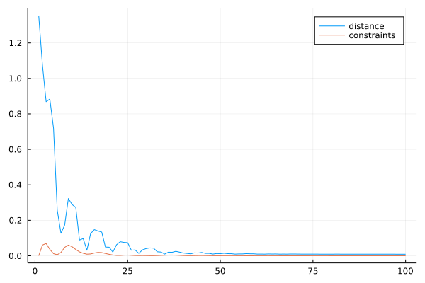
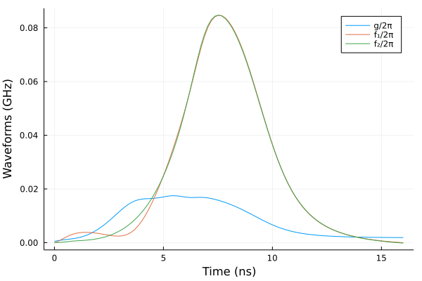

$\sqrt{i\text{SWAP}}$ gate in superconducting qubits
In this notebook, we design optimal pulses to realize a high fidelity $16ns$ $\sqrt{i\text{SWAP}}$ gate, we minimize the leakage out of computational space. We model a system of two flux tunable transmons with the following Hamiltonian,
\[H = \left[\omega_1 + f_1(t)\right] a_1^{\dagger} a_1 + \frac{\eta_1}{12} \left[a_1^{\dagger} + a_1\right]^4 + \left[\omega_2 + f_2(t)\right] a_2^{\dagger} a_2 + \frac{\eta_2}{12} \left[a_2^{\dagger} + a_2\right]^4 + g(t) (a_1 - a_1^{\dagger}) (a_2 - a_2^{\dagger}) \]
using Sisyphus
using QuantumOptics
using LinearAlgebra
using Flux, DiffEqFlux
using Plots
using OrdinaryDiffEq: DP5, Tsit5, Vern7, Vern9, BS3
using Random
using ProgressMeter
ProgressMeter.ijulia_behavior(:clear)ω₁ = 2π*5.0
η₁ = -2π*300.0*1e-3
ω₁ += η₁
ω₂ = 2π*5.0
η₂ = -2π*300.0*1e-3
ω₂ += η₂
ωlo1 = ω₂
ωlo2 = ω₁here we consider the first 6 levels of each transmon
n_levels = 6
bs = FockBasis(n_levels-1)
id = identityoperator(bs)
a1 = destroy(bs)⊗id
a1d = create(bs)⊗id
a2 = id⊗destroy(bs)
a2d = id⊗create(bs)
id12 = id⊗idH0 = (η₁/12.0)*(a1 + a1d)^4 + (η₂/12.0)*(a2 + a2d)^4 ## anharmonic part
H1 = (a2 - a2d)*(a1 - a1d) ## capacitive coupling
H2 = a1d*a1 + 0.5*id12
H3 = a2d*a2 + 0.5*id12
t0, t1 = 0.0, 16.0Random.seed!(3)
n_neurons = 8
ann = FastChain(FastDense(1, n_neurons, tanh),
FastDense(n_neurons, n_neurons, tanh),
FastDense(n_neurons, n_neurons, tanh),
FastDense(n_neurons, 3))
θ = Vector{Float64}(initial_params(ann))
n_params = length(θ)187we first pretrain the neural networks to produce gaussian pulses
g_guess(t) = @. 0.01*2π*exp(-(t-0.5*t1)^2/(0.2*t1)^2)
f1_guess(t) = @. 0.1*2π*exp(-(t-0.5*t1)^2/(0.2*t1)^2)
f2_guess(t) = @. 0.1*2π*exp(-(t-0.5*t1)^2/(0.2*t1)^2)
tsf32 = Float32(t0):0.1f0:Float32(t1)
gs = Vector{Float32}(g_guess(tsf32))
f1s = Vector{Float32}(f1_guess(tsf32))
f2s = Vector{Float32}(f2_guess(tsf32))
ts = Vector{Float64}(tsf32)
function loss(p)
c = 0.0f0
for (i,t) in enumerate(tsf32)
x = ann([t], p)
c += (x[1] - gs[i])^2
c += (x[2] - f1s[i])^2
c += (x[3] - f2s[i])^2
end
# println(c)
c
end
res = DiffEqFlux.sciml_train(loss, initial_params(ann), ADAM(0.1f0), maxiters = 500)
θ = Vector{Float64}(res.u)coeffs(p, t) = let v=ann([t], p)
[v[1], ω₁ + v[2], ω₂ + v[3]]
end
H = Hamiltonian(H0, [H1, H2, H3], coeffs)states = [fockstate(bs, 0)⊗fockstate(bs, 0),
fockstate(bs, 0)⊗fockstate(bs, 1),
fockstate(bs, 1)⊗fockstate(bs, 0),
fockstate(bs, 1)⊗fockstate(bs, 1)]
trans = UnitaryTransform(states, [[1 0 0 0];
[0 1 1.0im 0]/√2;
[0 1.0im 1 0]/√2;
[0 0.0 0.0 1.0]])bcs(p) = 2.0*sum(ann([t0], p).^2 + ann([t1], p).^2)
cost = CostFunction((x,y)-> 1.0-real(x'*y), bcs)prob = QOCProblem(H, trans,(t0, t1), cost)here we use the gaussian pulses as initial guess and solve the QOCProblem
sol = solve(prob, θ, ADAM(0.01); maxiter=100)[32mProgress: 100%|█████████████████████████████████████████| Time: 0:54:37[39m
[34m distance: 0.008841084452384546[39m
[34m constraints: 0.0003239125678191379[39mplot(sol.distance_trace, label="distance")
plot!(sol.constraints_trace, label="constraints")
optimal pulses to tune the flux lines and capacitive coupling
g(t) = ann([t], sol.params)[1]/2π
f1(t) = ann([t], sol.params)[2]/2π
f2(t) = ann([t], sol.params)[3]/2πts = t0:t1/100:t1
plot(ts, g.(ts), label="g/2π")
plot!(ts, f1.(ts), label="f₁/2π")
plot!(ts, f2.(ts), label="f₂/2π")
xlabel!("Time (ns)")
ylabel!("Waveforms (GHz)")